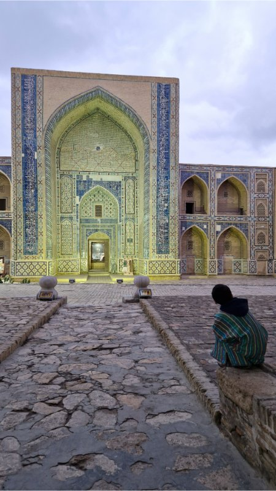

Buhara: Trka s vremenom, „dnevna soba“ i pljusak u starom gradu, 9. i 10. novembar 2026.
Ujutru krećemo za Buharu. Ovaj put brzim vozom. Takođe biznis klasa ali u brzom vozu nije impresivna
Krećemo sat vremena ranije, znamo da nam do železničke stanice treba oko pola sata i ostaje nam još pola sata. Sve je u redu.
Osim što nije. Zbog velikih kofera uvek se delimo u dva taksija. Njihov stiže. Naš zeza. U stvari, Uklon se zaglavio na nekoj ponudi. Ponudi cenu, pa kaže nema po toj, pa mi podignemo cenu, ustvari prihvatimo ponuđenu, pa on nađe vozilo. E, sad se zaglavio i vrti. Yandex nam nešto ne radi. Vreme curi.
Lokalni taksista prilazi i nudi za 180.000 suma. Mi odbijamo jer su one otišle za oko 20.000. Vreme i dalje curi. Na kraju pristajemo, ubacuje kofere, mi sedamo, on izlazi iz kola. Ide do nekog čoveka, pozdravljaju se, rukuju, ćaskaju. Vraćaj se, žurimo. Vičemo i na srpskom i na engleskom. Džabe. U neko doba prilazi taj prijatelj i obaveštava nas da je to deljeni taksi i da moramo da čekamo još nekoga. Kreće panika. Kasnimo. Koliko tražiš? 250.000. Mi ljute. Ali kad preračunamo da je to oko 20 evra, ma vozi!
E, onda je skrenuo sa glavnog puta u neku uličicu suprotno od stanice. Vraćaj se, vičemo. Sad nešto viče i on. Pokazujemo mapu. Okreće. Sto godina semafor da se uključimo na glavni put.
Brzo, gas, gas. Vozi! On ne razume. Kad sam mu pritisnula nogu, shvatio je. Juri, prelazi preko duple u suprotni smer. Šnira se među vozilima. E, sad, da li je sreća što smo na svaki minut imale semafor po pola minuta, pa ga je to zaustavljalo u jurnjavi, ili nesreća jer nas usporava ka vozu. Za zeleni talas nisu čuli. Uslikao ga je radar tri puta, verovatno ima računicu jer je naplatio bukvalno 10 puta više nego Yandex. Uglavnom, stiže on nekako do stanice, platismo mu koliko je tražio. Trčimo k’o bez duše sa sve koferima i dok smo hvatale vazduh, vidimo kako voz odlazi dok stojimo ispred njega.
Svjetlana kaže da je pogledala u kolima da je sledeći voz za sat vremena i da košta 25 evra, pa nismo bile u panici. Čak su nam delimično priznali i prethodne karte, pa smo doplatile samo 9 evra.
Sat vremena kasnije i 9 evra više (za toliko se stvarno nećemo jediti), eto i nas u savršenom hotelu u Buhari.
Nauk je da smo trebale povećati ponuđeni iznos u aplikaciji Uklon i verovatno bi brže našao nekog vozača da dođe po nas.
Železničke stanice u Samarkandu i Buhari su dalje od centra, tako da računajte na to. Posle ovoga sa taksistima išla sam po dva sata ranije. Ko se na mleko opeče, taj i u jogurt duva. Pogotovo što voz za Hivu ide jednom dnevno. O aerodromu da i ne pričam.
Nadrndana na taksiste, vičem na sledećeg taksistu na stanici u Buhari koji prilazi i gnjavi i objašnjava da Yandex ne valja. Na „No“ ne reaguju, izdrndana vičem „Go away“ taksisti, ne pomaže. I dalje stoji i gnjavi. Nije mogao da priđe Yandex, morale smo pešačiti sa koferima a poučene iskustvom da i skup taksi nije skup, pristanemo i na onog taksistu kog sam terala a koji se zalepio za nas kao taksena marka.
Vozi nas taksista i gleda u telefon. Kažem: „Nemoj da gledaš telefon dok voziš.“ On se okrene i gleda u mene nazad na sedištu. „No problem“, kaže on. Još je gore, gledaj već jednom taj put. Nemoj ni mene da gledaš. Svjetlana kaže: „Gledam ja, ne brini.“ Misleći na mapu i gde treba da se skrene. Ne pomaže mi to previše ako se slupa.
I tako taksista kom sam govorila „Go away“ viče za mnom: „Madam“, ja zaboravila jaknu u taksiju. Hvala mu.
Tako smo zaboravili jednu i po jaknu. Svjetlana jednu u ormanu u Samarkandu, a ja svoju u taksiju. Zamalo. Hvala taksisti.
Elem, hotel u Buhari je fantazija. Zove se Aida. Nov, radi tek 2 meseca. Sve novo, lepo, čisto. Osoblje kao da se takmiči ko će biti ljubazniji. Devojka nas toplo izgrlila kad smo odlazile.
.jpg "Hotel Aida, Buhara")
A, Buhara! Svidelo mi se što postoji stari grad gde su sve zgrade stare. U Samarkandu su grandiozne znamenitosti, ali su razbacane između modernih zgrada. Buhara je ljubavna, ceo stari grad je kao filmska scena. Sve je na peške i prezanimljivo. Osećaj me podseća na Budvu stari grad, arhitektura je naravno potpuno drugačija. Gomila medresa, džamija, bazara, jezerce, labudovi. Nisam im popamtila imena znamenitosti, samo sam lutala ulicama i gde god pogledaš vidiš nešto lepo.
Centralni deo je Labi Hovuz i Nodir Devonbegi Madrasah, medresa sa veštačkim jezerom na kom su labudovi, a okolo su restorančići. Lepa je atmosfera. Dopao mi se opis Kruzovih - dnevna soba Buhare. Ručale smo uz jezero plov, pilav, sa mesom koje se topi u ustima, suvim grožđem, leblebijama i rendanom šargarepom. Izbegavale smo im to nacionalno jelo do sada a bilo je iznenađujuće ukusno. Ustanovile smo da je tako ukusan jer je dobro masan. Košta 3,74 evra. Naručile smo i krilca sa roštilja koja su nam se dopala pa smo odlučile da tu dođemo i uveče na večeru.
.jpg "Labi Hovuz, Buhara")
.jpg "Labi Hovuz, Buhara")
Tu je i Medresa Nodir Devonbegi. Ima plave ptice, koje nose jelene prema suncu sa ljudskim licem. Opet nešto neuobičajeno za islamsku arhitekturu. Ispred je parkić i figura čoveka koji jaše magarca. To je Hodža Nasredin (Mulla Nasreddin), čuveni satiričar i mudrac iz istočnjačkog folklora. Njegova bronzana statua na magarcu je jedno od najpoznatijih mesta za slikanje u Buhari. Unutra ima prodavnica na mestu nekadašnjih učionica sa vrlo lepim suvenirima. Tu me jedna prodavačica prepoznala da sam bila i juče.
.jpg "Medresa Nodir Devonbegi, Buhara")
.jpg "Hodža Nasredin na magarcu, Buhara")
Obišle smo i Chor Minor Monument, sa četiri vrhića. Pored je interesantna antikvarnica sa figurama Lenjina, ordenjem, značkama, medama sa Olimpijade...
.jpg "Chor Minor Monument, Buhara")
.jpg "Chor Minor Monument, Buhara")
.jpg "antikvarnica, sovjetski suveniri, Buhara")
Veličanstveni Poi Kalon. Čine ga:
- Kalan Minaret, čuveni minaret iz 1127. godine.
- Kalan Mosque, velika džamija, kakvu danas vidimo potiče iz 16. veka.
- Mir-i-Arab Madrasa, prelepa medresa sa tirkiznim kupolama. Završena je 1535–1536. godine. Dok je minaret preživeo Mongole, ova medresa je jedna od retkih koje su radile čak i u sovjetsko doba (tamo su se školovali imami za ceo SSSR).
Minaret je visok 46 metara. Legenda kaže da je Džingis Kan stao ispred njega, i kako je podigao pogled, spao mu je šlem. Sagnuo se po šlem i rekao: „Nikada se ni pred kim nisam sagnuo, ali ova građevina je toliko veličanstvena da me je naterala da joj se poklonim. Ostavite je da stoji.“ I tako je minaret ostao, a ostatak Buhare su razorili.
.jpg "Poi Kalon, Buhara")
.jpg "Poi Kalon, Buhara")
.jpg "Poi Kalon, Buhara")
Ima puno suvenirnica, prodavnica tepiha. Za mene nije uobičajeno ali sam se nakupovala.
.jpg "bazar, Buhara")
Imala sam svoj me time i lutala ulicama dok su one kupovale vrlo jeftine naočare sa dioptrijom.
Uveče smo izašle u dnevnu sobu Buhare na večeru. Elem mi na krilcima, padne po koja kap kiše. Taman smo oglabale krilca, nahranile lokalnu mačku i psa, platile kad je ljuljnuo baš jak pljusak. Uz to i grmi i seva. Blatnjava voda nam se sa krovova sliva na kišobran. Voda teče u potocima po ulicama. Patike i čarape mokre, farmerice, meni jakna prokisla na ramenu, ruksak prokisao, sreća pasoš i pare nisu. Dobro je da smo smeštene u samom centru.
Drugi dan u Buhari
Sledeći dan smo ponovo obišle minaret. Pa otišle do tvrđave Ark of Bukhara, gde se pruža vrlo lep pogled na grad.
.jpg "Ark of Bukhara, Buhara")
.jpg "Ark of Bukhara, Buhara")
Opet su nas zaustavile dve studentkinje i sada je Svjetlana dala intervju o običajima u našoj zemlji.
Svi nas pitaju odakle smo ili da li smo iz Italije. Izgleda imaju puno Italijana turista. Za Novaka Đokovića uglavnom znaju. Za Nikolu Teslu ne.
Videle smo mozaik na kom su bili prikazani želudac i debelo crevo, vrlo odgovarajuće na ulazu u restoran. Bilo nam je baš neobično. Nismo mogle da se načudimo. Da li to dobro vidimo.
.jpg "mozaik unutrašnjih organa, Buhara")
U tradicionalnoj islamskoj umetnosti retko se prikazuju ljudi i životinje. Mnogo češće dominiraju raskošna arapska kaligrafija, geometrijski ornamenti i biljni motivi. A ovde, na ulazu u restoran, ljudski unutrašnji organi! Ovo je baš moderna umetnost.
Svi restorani imaju plov, krispi patlidžan, čorbu od sočiva, krilca pileća, cezar salatu, biftek i pečeni krompir ali Yoi u Buhari nam je bio poseban. Imao je, meni, prelepo jelo sa krispi piletinom i narandžom, slatko, ljuto, kiselo. Lepe su bile i rolnice od patlidžana sa mladim sirom.
.jpg "Buhara")
Obišle smo i Bolo Hauz Mosque, džamiju sa drvenim stubovima i plafonom sa rezbarijama. Izuzetno lepa i posebna zbog tog drveta. Poznata je i kao „džamija sa 40 stubova“. Zapravo ih ima 20 drvenih, ali pošto se ogledaju u bazenu (hauzu) ispred nje, izgleda kao da ih je duplo više.
.jpg "Bolo Hauz Mosque, Buhara")
U blizini je i baš velika pijaca koja mi liči na našu najlon pijacu. Ima hrane, odeće. Tu me je neko povukao za rukav. Okrenem se, a ono jedna stara baka oko 80 – 90 godina mi daje karamel bombonu i priča na ruskom. Prepoznala sam „Bog da zdravlje i mladost“. Ja sam imala Bonžitu, pa sam joj dala.
Popodne su one išle po naočare, a ja opet lutala i fotografisala i uživala.

.jpg "Buhara")
Stari grad znam napamet i više puta sam ga prepešačila. Volim na putovanju kad neke stvari koje su mi lepe vidim više puta. Zato sam u Samarkandu birala smeštaj preko puta Registana.